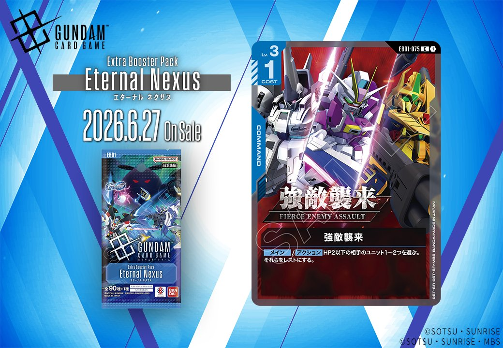
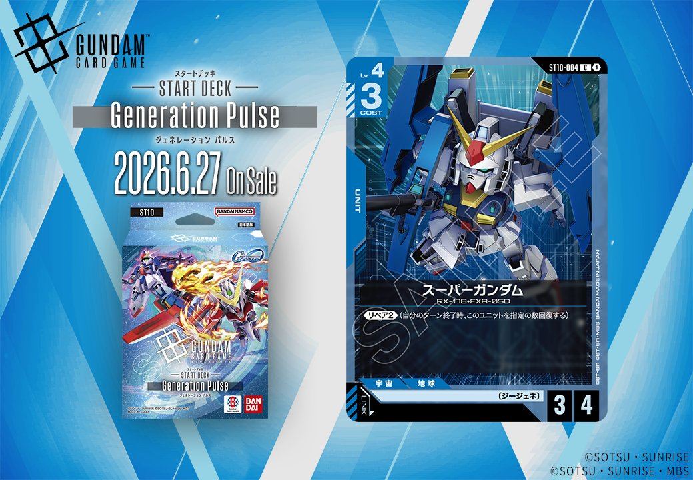

今回は「Eternal Nexus」と「Generation Pulse」から登場する青色の新カード2枚を紹介します。COMMANDカード「強敵襲来」とUNITカード「スーパーガンダム」は、それぞれ青色デッキの戦術の幅を広げる効果を持っています。

強敵襲来 (EB01-075)
| 色 | 青 | タイプ | COMMAND |
| Lv | 3 | コスト | 1 |
効果: メインアクション HP2以下の相手のユニット1~2つを選ぶ。それらをレストにする。
強敵襲来は、HP2以下の相手ユニットを1～2つレストにできるコスト1の青コマンドカード。低コストで複数の小型ユニットを無力化できるため、序盤の展開を遅らせたり、相手の攻撃ラインを崩すのに有効だろう。 現環境の青デッキではアムロ・レイやガンダムといった主力ユニットが高い採用率を示しており、これらのユニットを守るための防御的な選択肢として、または相手の序盤の展開を妨害する手段として活用できそうだ。

スーパーガンダム (ST10-004)
| 色 | 青 | タイプ | UNIT |
| Lv | 4 | コスト | 3 |
| AP | 4 | HP | 3 |
| 特徴 | 〔ジージェネ〕 | ||
効果: 《リペア(2)》(自分のターン終了時、このユニットを指定の数回復する)
スーパーガンダムはコスト3でAP4/HP3のスタッツに《リペア(2)》を持つユニット。毎ターン終了時に2点回復する能力により場持ちが良く、中盤以降の盤面維持に貢献する。現環境の青デッキはアムロ・レイやガンダムなど低コストユニットが主流だが、このカードは耐久力を活かした防御的な運用が期待できる。


関連カード
-
 アムロ・レイ(ST01-010)青系デッキ内採用率59.3% (706デッキ)
アムロ・レイ(ST01-010)青系デッキ内採用率59.3% (706デッキ) -
 ガンダム(ST01-001)青系デッキ内採用率58.3% (694デッキ)
ガンダム(ST01-001)青系デッキ内採用率58.3% (694デッキ) -
 覚悟の表れ(GD01-100)青系デッキ内採用率49% (583デッキ)
覚悟の表れ(GD01-100)青系デッキ内採用率49% (583デッキ) -
 コルシカ基地(ST02-016)青系デッキ内採用率47.5% (565デッキ)
コルシカ基地(ST02-016)青系デッキ内採用率47.5% (565デッキ) -
 ガンタンク(GD01-008)青系デッキ内採用率36.9% (439デッキ)
ガンタンク(GD01-008)青系デッキ内採用率36.9% (439デッキ) -
 ハロ(EB01-017)NEW青系 — 同色・共通特徴: ジージェネ（新カード）
ハロ(EB01-017)NEW青系 — 同色・共通特徴: ジージェネ（新カード） -
 開発経路図の解放(ST10-014)NEW青系 — 同色・共通特徴: ジージェネ（新カード）
開発経路図の解放(ST10-014)NEW青系 — 同色・共通特徴: ジージェネ（新カード） -
 ルーナ・マナ&キャリー・ベース(ST10-016)NEW青系 — 同色・共通特徴: ジージェネ（新カード）
ルーナ・マナ&キャリー・ベース(ST10-016)NEW青系 — 同色・共通特徴: ジージェネ（新カード） -
 フルアーマー・ガンダム(サンダーボルト版)(EX)(EB01-009)NEW青系 — 同色・共通特徴: ジージェネ（新カード）
フルアーマー・ガンダム(サンダーボルト版)(EX)(EB01-009)NEW青系 — 同色・共通特徴: ジージェネ（新カード）